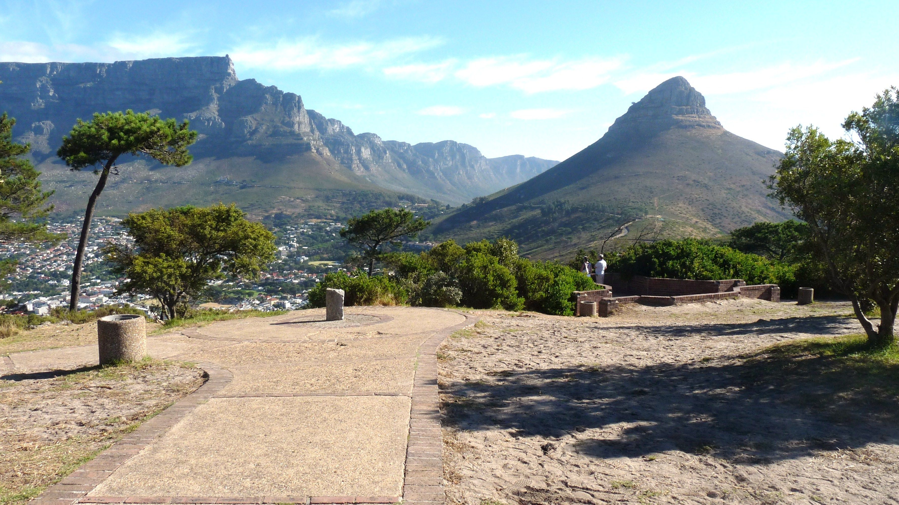

Compiled by Lisa Mbatsha

Signal Hill, which connects Kloof Nek to Lion’s Head, in the distinctive shape of a lion’s rump, is one of the most famous spots in Cape Town for sundowners. Views from the 350m high summit are nothing short of spectacular, particularly at night, and picnic dinners with accompanying drinks is something of a capital pastime.
South Africa’s Astronomical Observatory makes its crescent moon observations from here, as it’s an excellent place for spotting the most difficult crescents.
In the evenings Signal Hill is a little like ‘lovers lane’ - popular with couples who are up there to enjoy the lights and the romance of the Table Mountain backdrop, particularly during summer when Table Mountain is lit at night. Signal Hill separates the City Bowl from the suburb of Sea Point, and its name is indicative of its function as the site for the noon gun, which is fired every day, a little lower than the viewpoint on Signal Hill, at Lion Battery.
Table Mountain National Park stretches all the way from Cape Point to Signal Hill - in a sense it marks the boundary of the park and, in the past, flags were hoisted here to let Capetonians know that a ship was approaching the harbour. Reaching the viewpoint is as easy as driving up Kloof Nek Road from the city and then taking a right at the top of the hill. A couple of kramats, or sacred shrines, lie on Signal Hill and, during the day, this is a popular launch site for model aeroplanes and paragliders. From Signal Hill you can also go on and walk up Lion’s Head, a popular mountain walk that is particularly beautiful to do when there is a full moon.
Signal flags were used to communicate weather warnings as well as anchoring instructions to visiting ships in order to ensure that they prepared adequately for stormy weather while in the bay. Similarly, ships could use flags to signal for assistance if, for example, an anchor line parted during a storm. It is known for the Noon Gun that is operated there by the South African Navy and South African Astronomical Observatory. In 1836, a time ball was set up at the Cape Town observatory, however it was not visible to ships in the harbour, so a second time ball was erected on Signal Hill in order to relay the precise moment of 1pm Cape Mean Time.
In this way ships in the bay were able to check their marine chronometers. The daily practice of dropping of the ball continued until 1934, when it was made redundant by radio signals. The guns on Signal Hill were used to notify the public when a ship was in trouble and there was a possibility of casualties on the coast near Cape Town. Three guns would be fired from Chavonnes Battery, followed by a single gun in answer from Imhoff Battery